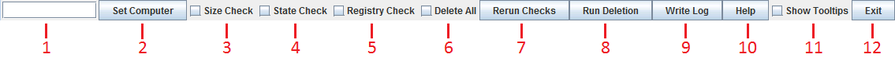
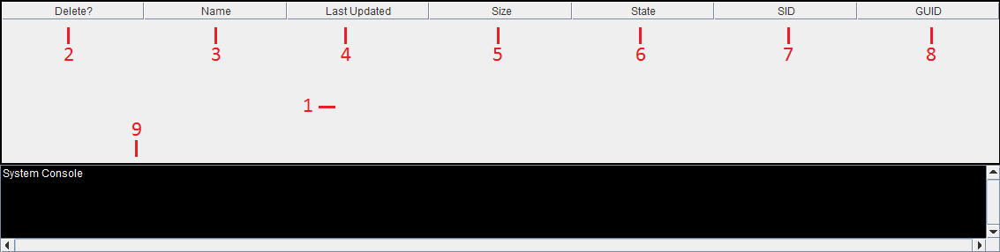

Profile Deleter Help
Summary
This program compiles a list of all local profiles on a Windows computer and provides functionality to delete them in bulk. This should work for computers running Windows 7 and above.
Quick steps to run a deletion
- Turn off the Size check (Functions Bar - 3) and turn on both the State check (Functions Bar - 4) and Registry check (Functions Bar - 5).
- Enter the hostname or IP address of the computer you want to delete user profiles from in the Computer Name field (Functions Bar - 1) and press Enter or click the Set Computer button (Functions Bar - 2).
- Select the users you want to delete. You can select all users by ticking the Delete All toggle (Functions Bar - 6) or you can select users manually by ticking or unticking them in the Delete? Column (Information Display - 2). If most or all users are showing as Uneditable consider running a State check again by ticking State check (Functions Bar - 4) and clicking the Rerun Checks button (Functions Bar - 7). If all or most users still show as Uneditable your user account may not have the correct permissions to delete the user folders from the target computer.
- Once you have selected the users you want to delete click the Run Deletion button (Functions Bar - 8).
- The System Console (Information Display - 9) will show you the current step the program is up to. Running a deletion can take a long time depending on the size of each user folder to delete.
- Once done a deletion report will be displayed in the System Console (Information Display - 9) and also saved to the reports folder.
Functions Bar

- Computer Name Field. Enter the IP address or hostname of the target computer in this field. Pressing enter will trigger the Set Computer button (2).
- Set Computer Button. Pings the computer entered in the Computer Name field (1) to ensure it is available on the network. Once it is determined to be online it will compile a list of users found on the computer and run the checks that are turned on (3, 4 and 5). The current computer set will be displayed in the title bar of the program.
- Size Check Toggle. If turned on a size check will be run when the Set Computer button (2) or Rerun Checks button (7) is pressed. The size check will calculate the total size of each user folder found on the target computer. The total size of all users will be displayed in the title bar of the program. This check does not need to be done to run a deletion. This check can take a long time depending on the total size of all user folders.
- State Check Toggle. If turned on a state check will be run when the Set Computer button (2) or Rerun Checks button (7) is pressed. The state check will attempt to rename each user folder found on the target computer to see if the folder can be edited and therefore deleted when a deletion is run. If the Delete All toggle (6) is turned on all users with state Editable will be flagged for deletion automatically when the state check is complete, unless they are in the cannot delete or should not delete lists. The cannot delete list and should not delete list are defined in the profiledeleter.config file. This check must be done before a deletion can be run.
- Registry Check Toggle. If turned on a registry check will be run when the Set Computer button (2) or Rerun Checks button (7) is pressed. The registry check uses REG QUERY to obtain the SID and GUID registry values for each user found on the target computer. See 'Deleting user profiles from a computer in Windows 7 and above' below for more information on these registry keys. The corresponding registry keys need to be deleted for each user to complete a profile deletion for that user, therefore this check must be done before a deletion can be run.
- Delete All Toggle. If turned on all users determined to be editable will be flagged for deletion. Users in the cannot delete list cannot be flagged for deletion. Users in the should not delete list won't be flagged automatically and must be flagged manually. If turned off this toggle will unflag all users. The cannot delete list and should not delete list are defined in the profiledeleter.config file.
- Rerun Checks Button. Reruns the checks that are turned on (3, 4 and 5). This allows you to quickly rerun specific checks or run checks that were not done when the computer was set without having to re-set the target computer. This button will only become active once a computer has been set.
- Run Deletion Button. Deletes all users flagged for deletion from the target computer. A state check (4) and registry check (5) must be done before a deletion can be run. This button will only become active once a computer has been set and a state and registry check have been done. Once a deletion is complete a deletion report will be displayed in the System Console and also saved in the reports folder.
- Write Log Button. Writes a log file to the logs folder detailing all actions since the program was opened.
- Help Button. Displays/hides this help message.
- Show Tooltips Toggle. Turns on tooltips. Hover over a UI element to display a tooltip for it.
- Exit Button. Closes the program. This will interrupt any processes running, therefore if a deletion is being run it is recommended to not close the program as the deletion process will end prematurely. This may cause a users folder on the target computer to be deleted and not the corresponding registry keys which will cause issues for them logging into the computer.
Information Display

- Users Table. Lists details about all users found on the target computer. The table can be sorted by clicking on a column heading to sort by that column in ascending or descending order. Columns can also be moved by clicking on the column heading and dragging it left or right. Sorting and rearranging is reset if a computer is set again using the Set Computer button or when a deletion is completed using the Run Deletion button.
- Delete Column. Tick the box next to each user to flag them for deletion. Users with a tick in the delete column will be deleted when a deletion is run. Only users with a state (6) of Editable can be ticked. Users in the cannot delete list cannot be flagged for deletion. Users in the should not delete list won't be flagged automatically and must be flagged manually. The cannot delete list and should not delete list are defined in the profiledeleter.config file.
- Name Column. The name of the user folder.
- Last Updated Column. The last time the user folder was updated. This is useful if you only want to delete old profiles for example.
- Size Column. The total size of the user folder in megabytes.
- State Column. Whether a user folder can be edited or not. Only users with a state of Editable can be marked for deletion. They also cannot be in the cannot delete list. The cannot delete list is defined in the profiledeleter.config file.
- SID Column. The SID value for the user from the registry. See 'Deleting user profiles from a computer in Windows 7 and above' below for more information on this value.
- GUID Column. The GUID value for the user from the registry. See 'Deleting user profiles from a computer in Windows 7 and above' below for more information on this value.
- System Console. This shows all actions taken by the program. Useful to see where the program is up to when running functions like the Run Deletion button as these processes can be lengthy.
Deleting user profiles from a computer in Windows 7 and above
Deleting a user from a computer running Windows 7 or above requires 3 items to be deleted otherwise the user will be unable to log back into the computer in the future.
- User Folder. The users profile folder on the computer must be deleted. This is located by default in C:\users.
- ProfileList Registry Key. The user will have a registry key in the Windows registry corresponding to their profile in HKLM\SOFTWARE\Microsoft\Windows NT\CurrentVersion\ProfileList. Under this key will be a list of registry keys corresponding to SID values for user profiles. To match the SID value to a user select a SID registry key and it will have a group of subkeys. One of these subkeys will be ProfileImagePath which shows which user folder the SID value corresponds to. You must delete the SID registry key under ProfileList that matches the user folder you want to delete. Also note the Guid subkey as you will need this for the next item to delete.
- ProfileGuid Registry Key. The user will have a registry key in the Windows registry corresponding to their profile in HKLM\SOFTWARE\Microsoft\Windows NT\CurrentVersion\ProfileGuid. Under this key will be a list of registry keys corresponding to GUID values for user profiles. To match the GUID value to a user select a GUID registry key and it will have a SidString subkey. This subkey corresponds to the users SID value which can be determined from the previous step, or you can match the GUID registry key with the Guid subkey noted down from the previous step. You must delete the GUID registry key under ProfileGuid that matches the user folder you want to delete.
Once these three items have been deleted the users profile will have been removed from the computer.